MEng Design Engineering, Year 2 of 4, Dyson School, Imperial College London
Field service 實戰
Imperial Formula Racing, engine team Panasonic, engineering trainee and cohort lead
Interfaces 介面
Mechanical 3D CAD · FEA · prototyping · design for manufacture · solid mechanics · thermofluids · materials selectionElectronics circuits · sensors · mechatronics · signals and controlSoftware Python (scikit-learn) · R · machine learning · decision trees · time-series analysis · statistics
Languages 語言
English · 廣東話 Cantonese · 普通話 Mandarin
Origin 產地
Hong Kong 香港, now London / Cardiff, UK
Availability 供貨
Summer 2027 internship
02
Powertrain
Imperial Formula Racing, engine team · Kawasaki Ninja 400 base engine · Oct 2025 – Jun 2026
02-01Flywheel, lightweighted 飛輪減重
Where can material come off a flywheel before it stops being worth it? Hold to rev it, switch on the FEA contour, and change the pockets, the base plate and how much rim wall gets skimmed off both sides.
Fig. 002 Flywheel in 3D, with section A–ADrag to rotate · right-drag to pan
Centrifugal, ρω²rSpin-up inertia, ρrα
00000rpm
Geometry 幾何
Pockets in base plate
Model readout Illustrative
Peak von Mises, now
0 MPa
Peak at 12,000 rpm
000 MPa
Stored energy, now
0.0 kJ
Mass
0.00 kg (stock)
Rotational inertia
0.0%
Torque, I·α
—
To machine
6 pockets
Model, not the team’s FEA: an assumed steel flywheel, Ø160 mm, with an 8 mm rim wall 22 mm tall either side of a base plate, and a hub that bolts to the crank. Stress comes from rotating-disc theory plus the rim pulling on the plate, with concentration at each pocket. The trends are real physics; the numbers are only as good as the assumptions.
Status
Not stocked 不設庫存
Goal
Remove material to cut rotational inertia
Variables
Lightening pockets, base plate thickness, and how much of the rim wall could be skimmed
Work
Team of three. Full CAD model and FEA, presented to the captains.
Machining
Would have been outsourced
Rejected 否決
Disposition: rejected on data. Cutting rotational inertia was real, but outsourced machining cost outweighed the gain. Knowing when not to make a part is part of the job.
Fig. 003 Head stud in section, from the engine’s measured stackDimensions measured · loads illustrative
Grip length
111.9 mm
Stud needed
155.4 mm
Stud top vs head face
1.5 mm below
Torque
0.0 N·m
Clamp load
0.0 kN
Stud stretch
0 µm
Nut turned
0°
Measured dimensions
ACounterbore Ø
20 mm
BHead depth (excl. counterbore)
51 ± 0.1 mm
CHole Ø
10 ± 0.1 mm
DHead gasket
0.45 mm (0.25–0.58)
ECylinder body depth
60.1 ± 0.1 mm
FBody gasket
0.3 mm
GCrankcase thread depth
32.7 mm
HThread
M9 × 1.25
ICounterbore depth
15 mm now, 20 max
Hold to torque: the wrench clicks at the target. Gaskets are drawn eight times thicker so you can see them. Washer, nut height, thread engagement and the 40 N·m target are assumptions for the demo, not ARP’s spec.
02-02Cylinder-head stud, custom 定製缸蓋螺柱
Application
Kawasaki Ninja 400 parallel-twin, cylinder head
Replaces
OEM head bolts
Why
More accurate, repeatable clamping force. Better head-gasket sealing under high cylinder pressure.
Off the shelf
None. No OEM or catalogue stud existed for this engine.
Source
Custom part, specified and sourced from ARP (USA)
My role
Led the investigation, specification and supplier negotiation
10Investigate bolts vs studs司徒
20Search OEM and off-the-shelf: none exist司徒
30Specify a custom stud with ARP司徒
40Captain approval司徒
50Negotiate supply through to ordering司徒
Each operation signed off with my chop 印章.
Fig. 004 Torque bench: clamp load at six head fastenersIllustrative model
Or do it yourself: click the six fasteners in order, 1 to 6.
Clamp spread, this build—00%
Builds logged—00
Each run draws thread friction at random. A bolt is torqued while it turns in the block, so friction scatter shows up as clamp scatter. A stud sits still while its nut is torqued, so less of it does. The numbers come from the model, not a test rig.
03
Data
Imperial College data science · Python, scikit-learn · 2026
03-01Heart-disease risk classifier 心臟病風險預測
A team of four built a decision tree in Python to flag heart-disease risk, then asked what it had actually learned. Below, the same kind of model retrains live as you change it: grow it deeper and watch it overfit, balance the classes, drop a feature, and trace the path to the riskiest patients.
Team
Four, Python
Data
UCI heart-disease dataset
Model
Decision-tree classifier, scikit-learn
Tuning
Depth swept 1 to 15, cross-validated on accuracy, precision and recall
Bias control
Stratified splits and balanced class weights, correcting for sex and class imbalance
Output
Scripted tree-path tracing to pull out the highest-risk symptom combinations, including a “silent” profile with no chest pain
Verdict
Short of clinical-grade reliability. We recommended external validation.
Fig. 005 Decision tree, retrained in your browser as you change itSynthetic data · real algorithm
Split criterion
Class weights
Held-out test set
Features the tree may use (click to drop one)
On held-out patients
Accuracy
0%
Recall
0%
Precision
0%
Specificity
0%
Training accuracy 0% ·
Confusion matrix
Accuracy against depth
What it splits on most
Training…
The project used the real UCI data. To retrain live without shipping patient records, this figure uses 303 synthetic patients drawn to resemble that dataset, with the same 13 features. The algorithm, the splits and the scores are computed for real.
04
Design
Human-centred Design Engineering, Year 1 · Team project · Jan – Jun 2026
04-01The Canvas: a pixel wall for Queen’s Lawn 像素畫牆
The brief: find out how moving through campus affects students’ stress, then design something that helps. The research kept pointing the same way. Students struggle to switch off from work, unwind through exercise and other people, and lose patience at card-reader doors. Our answer was a shared pixel wall on Queen’s Lawn: tap your college card, place a few pixels, and step out of work mode for a minute, together.
Question
How does movement through campus affect stress?
Research
Nine interviews on a campus map; a “what’s on your mind?” sticky-note board, where 40% of answers were about school or work; library headcounts of 513 and 462 students
How might we
Bring play into moving around campus; separate work and break spaces; take the friction out of access points
Ideation
34 thumbnail sketches, cut to 12 concepts, scored on effectiveness, feasibility, viability and endurance, leaving three
Co-design
Generative interviews with two Year 1 students on low-fi prototypes. They asked for physical taps over phones, a refill timer that nudges you to take a break, and regular clear-outs
Prototypes
Fusion 360 renders; a web canvas with a five-pixel limit per turn; an ESP32 breadboard rig of buttons and LEDs for tactile pixels
Decisions
Touch over a controller; pixel size chosen in user tests; light diffusion from observation; the college ID card as the safeguard, over face, fingerprint or phone
Fig. 006 The Canvas, playable 像素畫牆Tap your card, then click or drag on the wall
Pixels left 0
Tap your card to get five pixels.
The wall starts with pixel art that students drew on our web prototype during testing, redrawn in this catalogue’s inks. The rules are the prototype’s: five pixels a tap, erasing costs one, recolouring is free, and after your five there’s a short break before the next tap, the refill timer a co-design participant asked for. Your pixels stay in this browser.
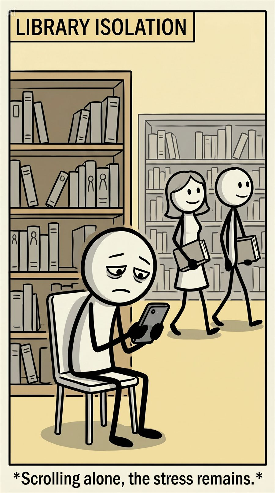
Fig. 006a Library isolation: the break that isn’t one
What we found
Ironically, students often did the things that stressed them while trying to relax, and talked about deadlines on their breaks.
40% of anonymous sticky notes on “what’s on your mind?” were about school or work.
In the library, 18% of 513 students were on a break in one count; 22% of 462 were on their phones in the other.
Access points grate. One interviewee taps his card three times cutting through one building, and his ice-hockey bag gets clamped by a stiff self-closing door at another.
Undergraduates avoid wearing lanyards, so cards live in wallets and come out mid-journey.
Honest about the data
It’s biased: people in a rush rarely stopped, and we sampled one walkway at one time of day.
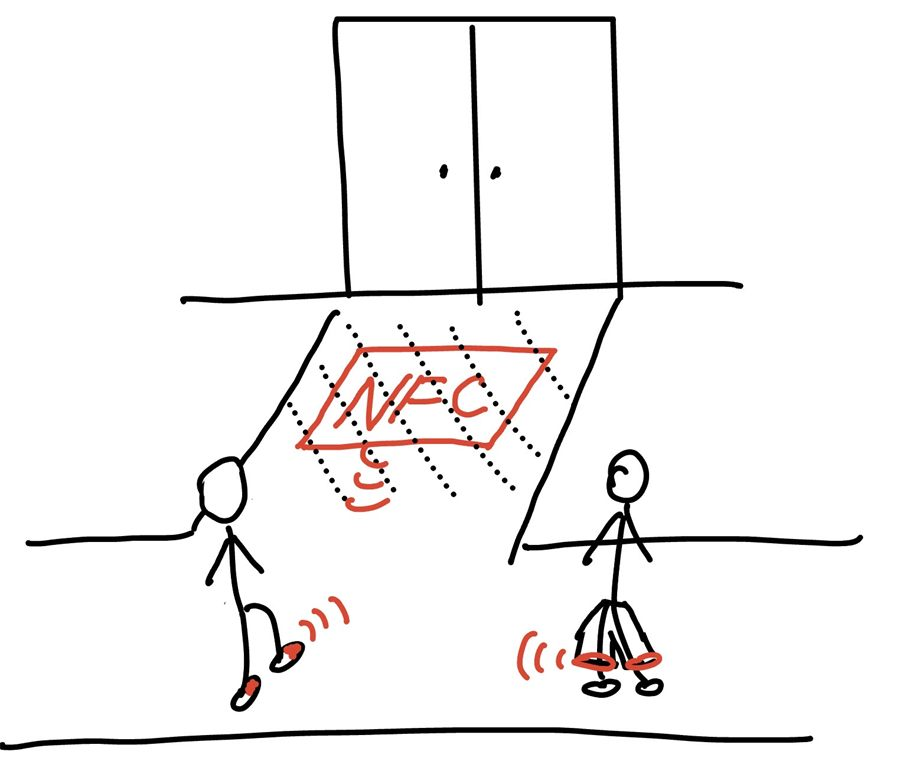
Fig. 006b Floor NFC pad
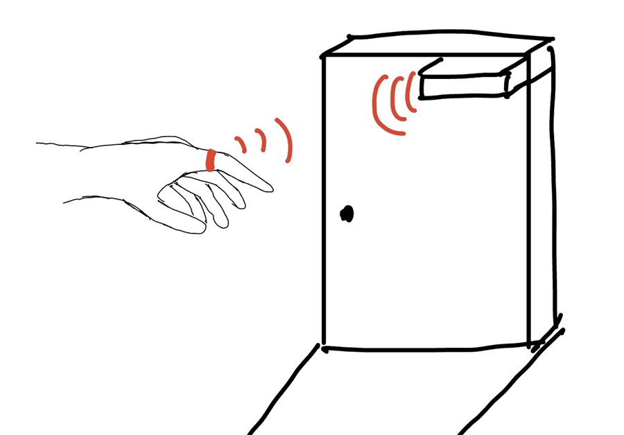
Fig. 006c Wrist tag
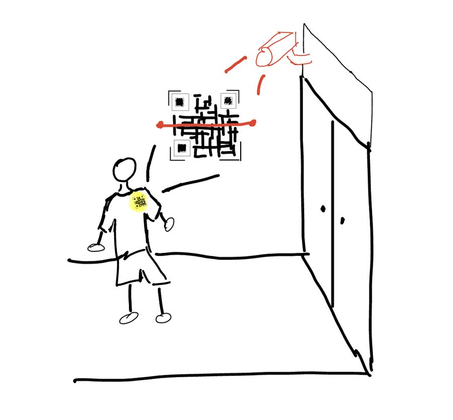
Fig. 006d Code on clothing
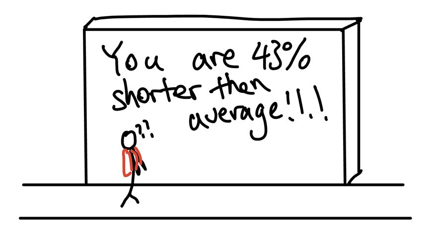
Fig. 006e A door with a sense of humour
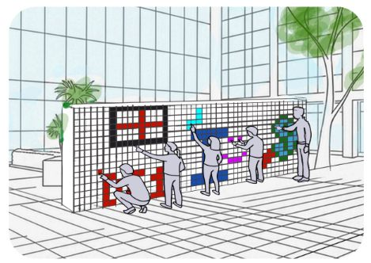
Fig. 006f Collaborative drawing display
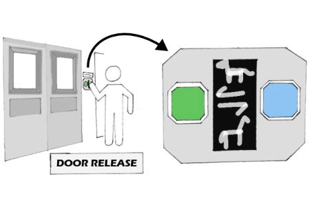
Fig. 006g Gamified access buttons
The three that survived the scoring
Gamified access buttons: two door-release buttons that also vote on a facetious question, so opening a door takes your mind off work.
Camera portals: two spots on campus linked by live video and sound, to break down social barriers.
Collaborative drawing display: a wall of pixels you change by tapping, so people make things together. This one became The Canvas.
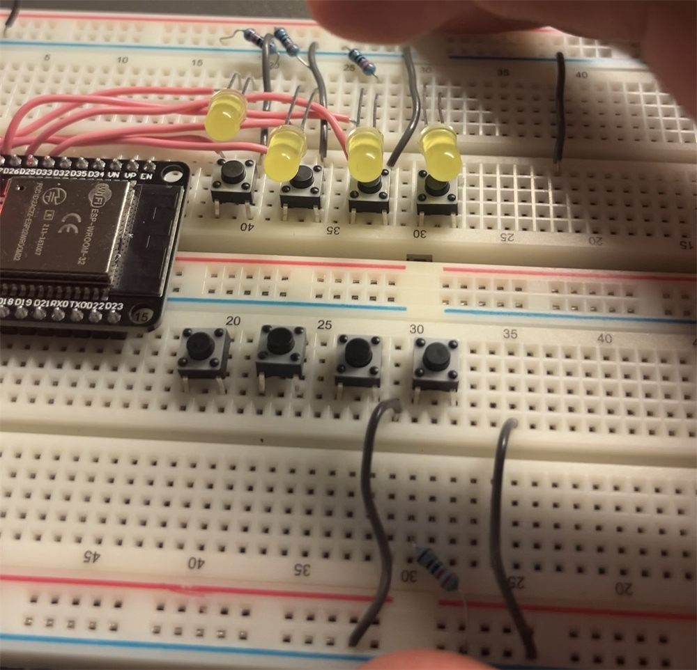
Fig. 006h ESP32 rig: a button per pixel
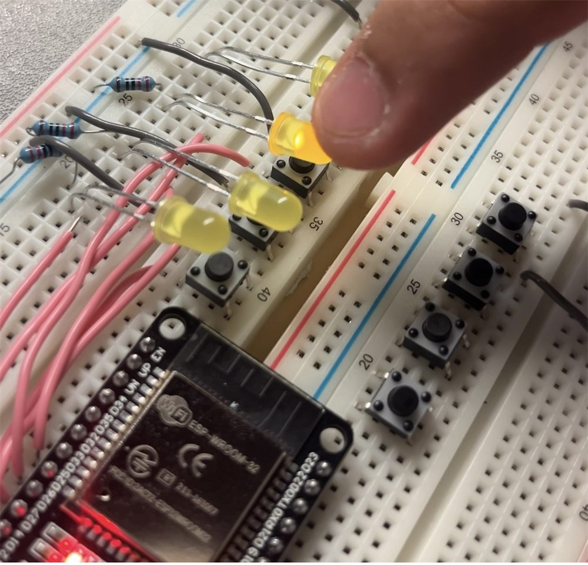
Fig. 006i Testing the tactile press
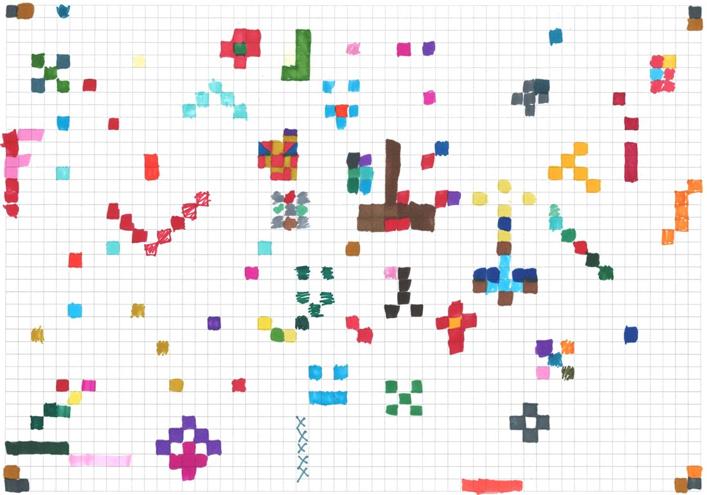
Fig. 006j A canvas students drew in testing
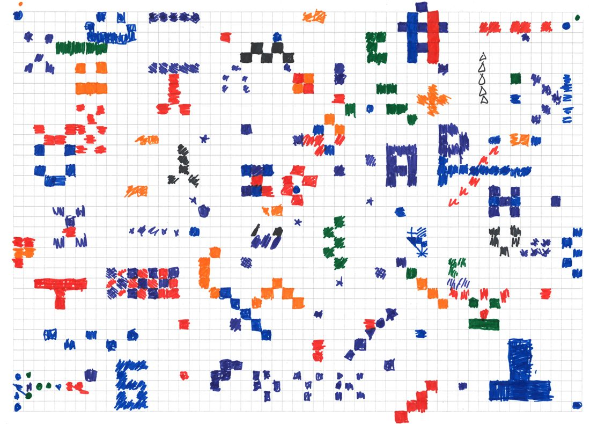
Fig. 006k And another
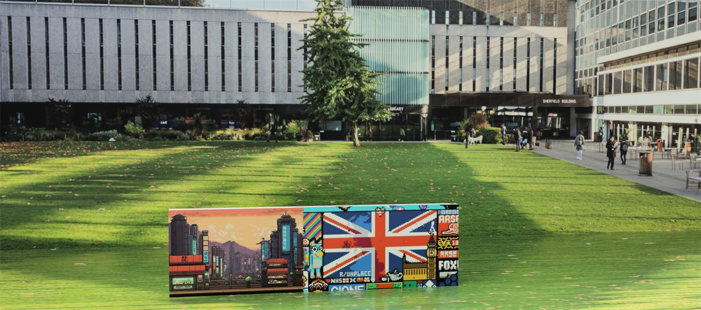
Fig. 006l March render, Fusion 360: the wall on Queen’s Lawn
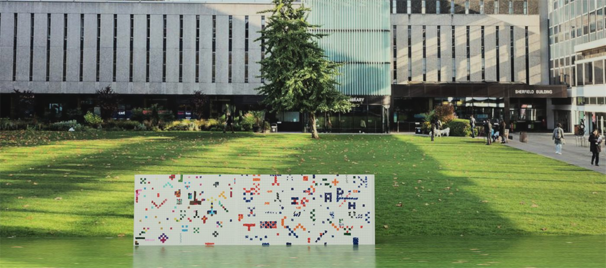
Fig. 006m May render, with the art students actually made
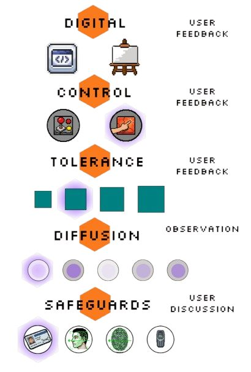
Fig. 006n Five decisions, and where each came from
Fig. 007 Circuit de Monaco, in 3D 摩納哥賽道Click the track · WASD or arrows · Space handbrake · P shift up · I shift down · C camera · R reset · G grid start
Lap 0 · Now 0.00 · Best --.--
0km/h
ESP32-CAM · 320×240 · Wi-Fi● REC
Set-up
Camera
Rear spoiler
Gearbox (manual: P up, I down)
Engine note
Sound
Grip set-up: rubber tyres, traction control, spoiler on.
Illustrative model The handling is a bicycle model with load-sensitive tyres, tuned to feel like the car, not data logged from it; the engine note is a real recording of a 2005 Red Bull-Cosworth RB1 V10 revving at the Goodwood Festival of Speed, by Edvvc (CC BY-SA 3.0, Wikimedia Commons), looped and pitched to the car’s revs through an eight-speed sequential box, for fun. Switch to the synthesised engine if it cannot load. The camera, the wing and the weight slider mirror what we actually tried. Circuit layout from the open f1-circuits GeoJSON (MIT), scaled down; the scenery is invented.
05-01RC car “Grand Prix” 遙控車大獎賽
Designed, built and raced in a competitive Year 1 Electronics assessment: circuits, sensors and mechatronics in one small car. The car in the game above is modelled on it.
Brain
ESP32 board with an OLED screen, driving a dual H-bridge motor driver
Drive and steer
Yellow gear motors on the rear, a micro servo steering the front
Control
First from a laptop on WASD, then from a tablet web controller
Budget FPV
We tried first-person driving on a budget: an ESP32-CAM on a printed mast, streaming to a browser
Handling
A drift-car approach, tuning weight distribution to control the slide
Aero
Added a rear spoiler, and a front wing to match
Chassis
3D-printed body and mounts
05-02Lap-time forecaster 圈速預測
In progress 開發中
A time-series model in R that forecasts lap times, built with methods from two Imperial ML summer courses. My first independent R project. Below, a small Holt smoothing model in the browser forecasts your next lap from the ones you just drove.
Lap
Time
Forecast
Error
No laps yet. Cross the line twice to get a forecast.
Next lap forecast: waiting for two laps
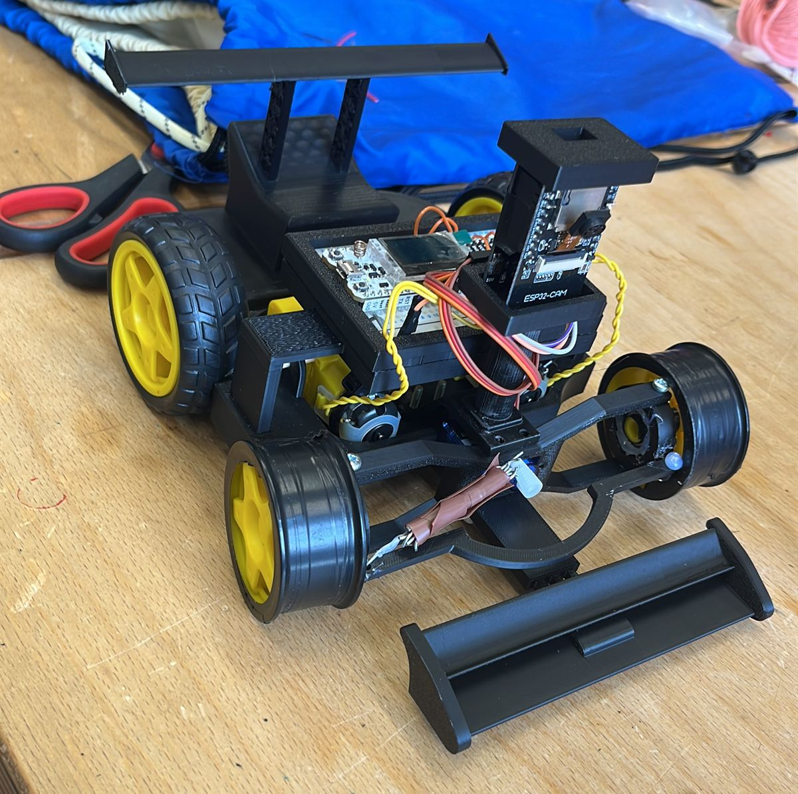
Fig. 007a The finished car
What's in the photo
Rear spoiler on two struts, added for rear grip at speed
Front wing to balance it
ESP32-CAM in a printed holder on a mast: the budget FPV camera
ESP32 board with OLED on top of the electronics box
Yellow TT gear motors driving the rear; narrow hard rings on the front wheels for the drift set-up
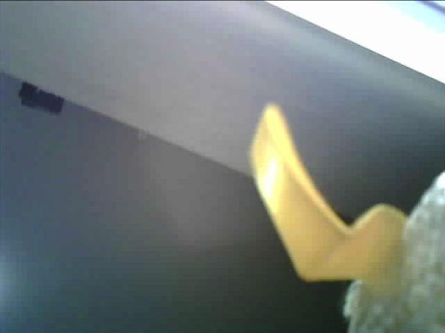
Fig. 007b First frames over Wi-Fi
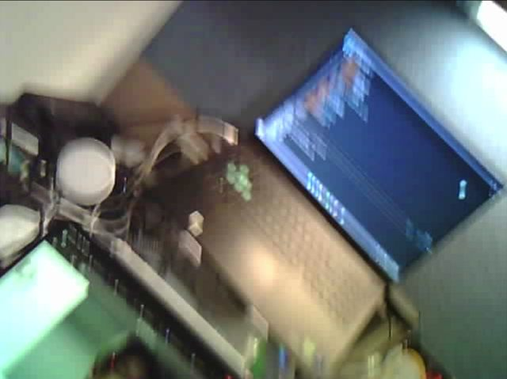
Fig. 007c Panning across the bench
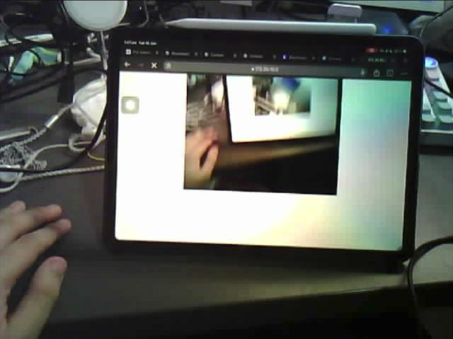
Fig. 007d Pointed at its own feed
Why a budget camera
We tried first-person driving with the cheapest camera that could stream: an ESP32-CAM serving video over Wi-Fi to a browser. It worked, with low resolution and some lag. Pointed at the tablet showing its own feed, the picture repeats inside itself, each copy a little late. The ESP32-CAM view in the game above imitates it.
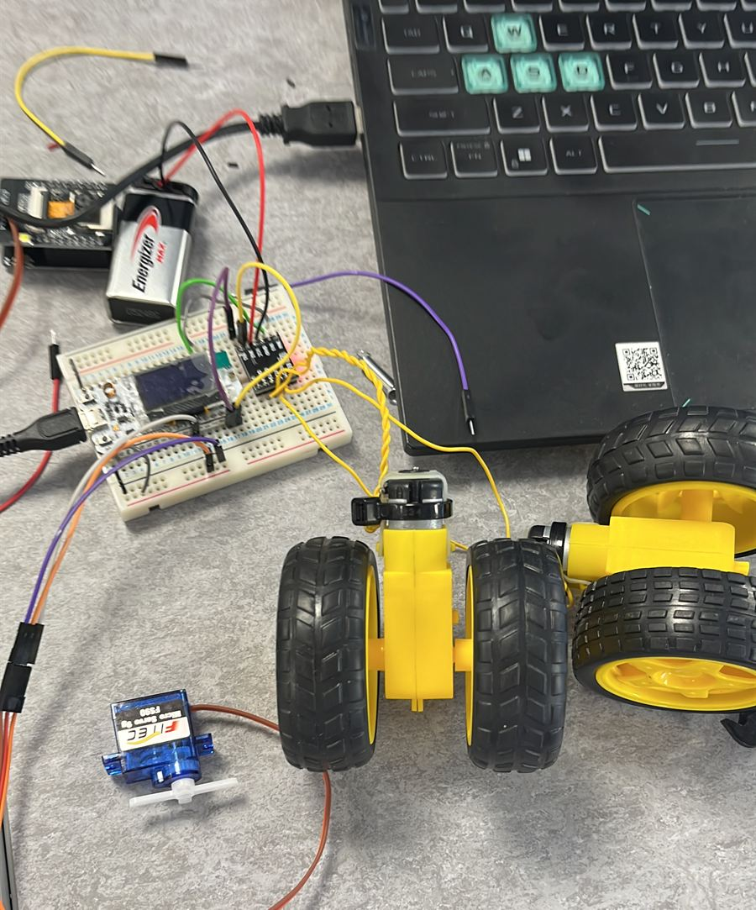
Fig. 007e First test, driven on WASDFig. 007f Then from a tablet controller
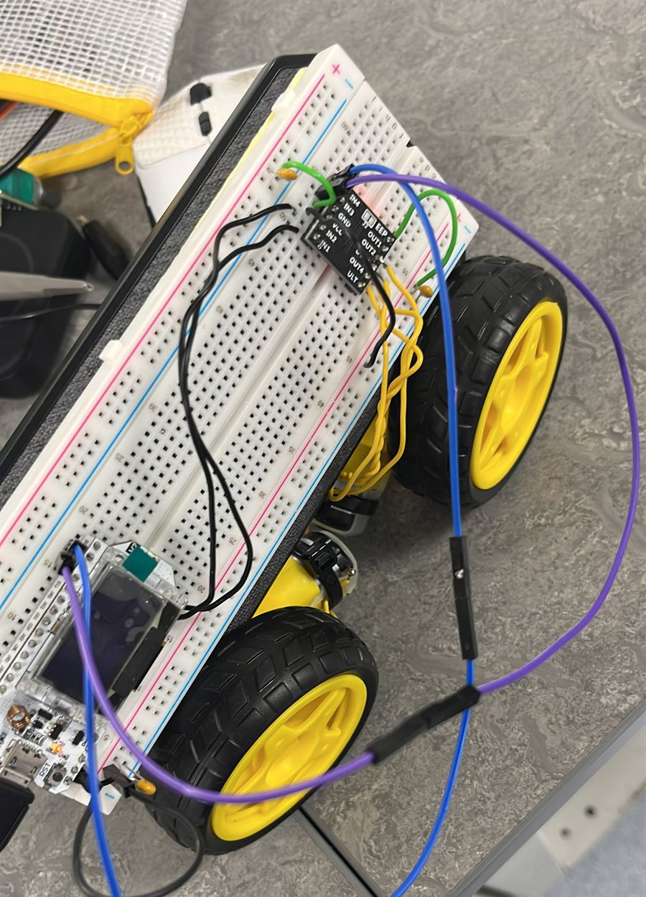
Fig. 007g Breadboard prototype on wheels
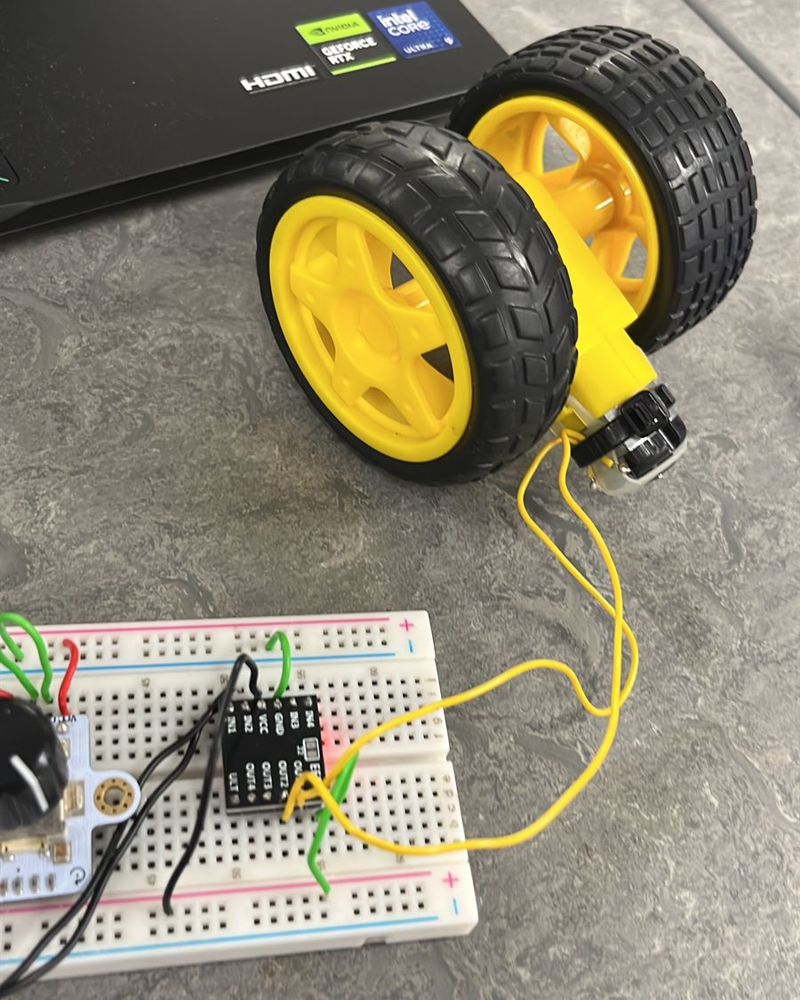
Fig. 007h Motor bench test
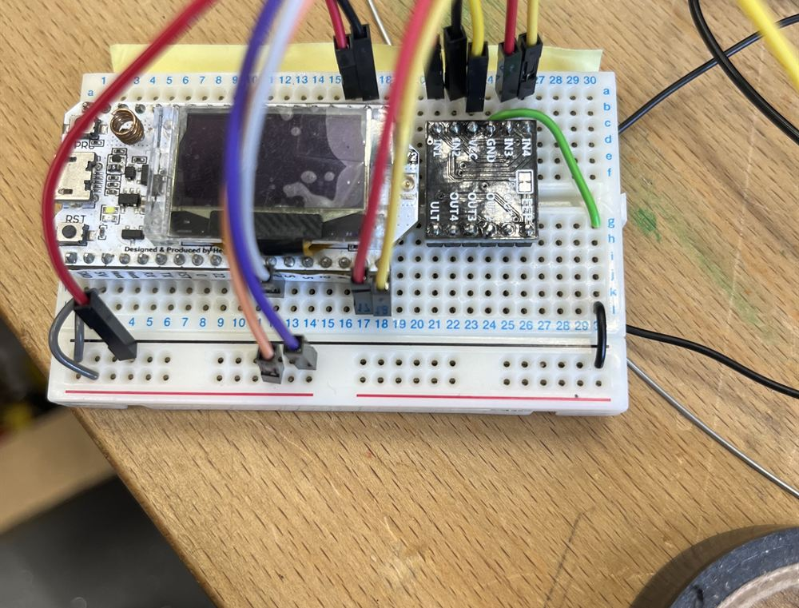
Fig. 007i ESP32 and motor driver
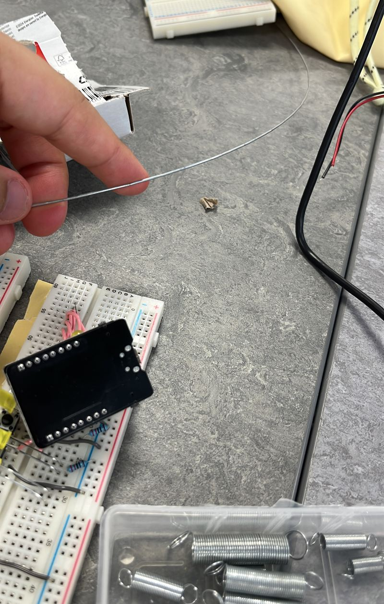
Fig. 007j Wire and springs on the bench
06
Service record
Bill of materials, newest first. Open a row for detail.
ItemRoleOrganisationPlaceDates
01MEng Design EngineeringImperial College London, Dyson SchoolLondon2025 – 2029
Year 1: highest module mark 79% in Materials and Manufacturing. Year 2 (2026–27): Solid Mechanics 2, Finite Element Analysis, Thermofluids, Electronics 2 (Signals, Systems & Control), Physical Computing, Computing 2: Applications, Product Design Engineering, Sustainable Design Engineering. Six-month industry placement in Year 3.
IMechEIETIED Accredited programme
02ML summer schools, two coursesImperial College LondonLondonJun – Jul 2026
Introduction to Modern Machine Learning (June 2026). Machine Learning and Statistics for Time Series Analysis (July 2026). The second one feeds straight into part 04-02.
03Engine team memberImperial Formula Racing (Formula Student)London2025 – 2026
Flywheel lightweighting (part 02-01) and cylinder-head studs (part 02-02) on the Kawasaki Ninja 400 engine. CAD, FEA and supplier sourcing for a four-stroke race engine.
04A LevelsSt John’s CollegeCardiff2025
A* MathematicsA* Further MathematicsA PhysicsA Design & Technology
05Warehouse operative, part-timeAnker InnovationsCardiff2024 – now
Inbound and outbound logistics and stock control against pick-rate targets, on safe manual-handling procedures where small errors cascade across the site. I report to the China-based head office across a time-zone gap, so every update has to be complete first time.
Nominated team lead of the trainee cohort. Led the design, CAD prototyping and pitch of a weather and environment monitor for several customer segments, fixed design flaws through iteration, and presented to management.
07
Off-spec
Non-standard parts. Not load-bearing on a CV, load-bearing everywhere else.
07-01Piano, ARSM diploma 鋼琴
ABRSM Associate diploma in performance. I also play for my church.
One of my favourite pieces to play
Liszt, Liebestraum No. 3 in A♭ major, S. 541 愛之夢
Published in 1850, it began as a song: Liszt set Freiligrath’s poem O lieb, so lang du lieben kannst, “love, as long as you can love”. In the piano version the melody sits in the middle of the texture, passed between the thumbs while both hands share the rippling accompaniment around it, and it twice breaks into a cadenza before the theme comes home.
Fig. 008Keyboard, C4 to B5Click the keys, or focus and type
0:00
Last note A to ; play white notes, W E T Y U O P play black
The recording streams from Wikimedia Commons, from the Al Goldstein collection in the Pandora Music repository (CC BY-SA 2.0). It is not me playing. While it plays, the keys light up from its live spectrum: a picture of the sound, not a transcription.
07-02Volleyball 排球
Plus basketball and football. Below, a rally against a CPU bean. On the ground a click bumps or sets the ball on your side; jump with Space and click in the air to attack it over the net, aiming where you click on the CPU’s half. Click at the very top of the jump for a perfect spike, right click in the air to tip it into the open court, and jump at the net to block. Pick the CPU: Rookie, Pro or Advanced.
Fig. 009 Bean volleyball, side elevationA / D move · Space jump · click: bump or set on the ground, spike in the air · right click: dive on the ground, tip in the air
You0:0CPUFirst to 7. Click the court to serve.
Other non-standard parts
07-03 Community
Youth leader and musician at church. Co-organised a 60-person summer camp.
07-04 Maths
Gold, UKMT Senior Mathematical Challenge
07-05 Physics
Silver, Senior Physics Challenge
07-06 Two wheels
Motorcycling. Useful context for a Ninja 400 engine.
07-07 Languages
English, 廣東話 Cantonese, 普通話 Mandarin
08
Contact
Email or LinkedIn
I’m looking for a summer 2027 engineering internship. My degree also includes a six-month industry placement in Year 3.